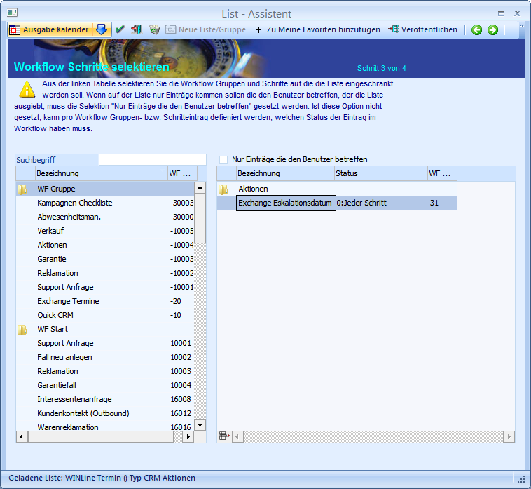
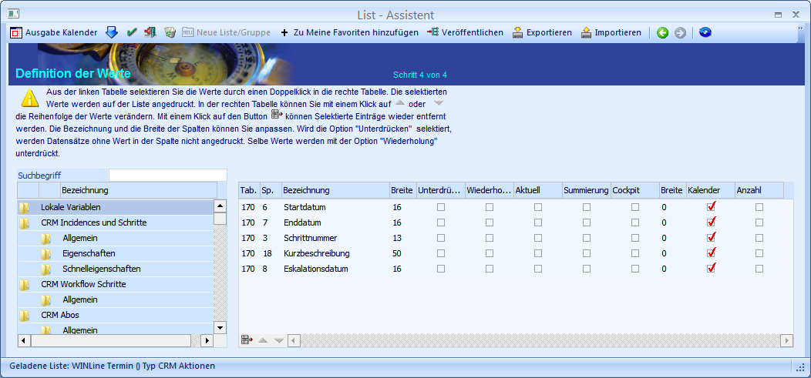

Um die synchronisierten Termine auch im WinLine Kalender zu sehen, muss vorher eine CRM Aktion im List-Assistenten angelegt werden.
In der WinLine INFO unter
1 CRM
1 Listen-Assistent
haben Sie die Möglichkeit den WinLine Kalender anzulegen.

Sie haben die Möglichkeit die Kalenderausgabe auf einen bestimmten Workflow-Schritt einzuschränken oder alle drei verfügbaren Exchange Workflow-Schritte einzubeziehen.

Im dritten und letzten Schritt wird nun definiert, welche Werte (Variablen) auf der Liste gedruckt werden sollen. Um die Werte im Kalender anzuzeigen, muss die Checkbox für Kalender aktiviert werden.
Die Werte für den Terminabgleich befinden sich in der Tabelle T170 (CRM Indices und Schritte). Folgende Spalten in der Datenbank sind vom Termin Exchange betroffen:
ü C001: Fallnummer
ü C003: Schrittnummer
ü C005: Datum Schritt geschrieben
ü C006/C007: Startdatum
ü C008: Eskalationsdatum
ü C009: Kundenkonto (über Add-In)
ü C010: Kundenkontakt (über Add-In)
ü C012: Arbeitnehmer (über Add-In)
ü C014: Artikel (über Add-In)
ü C017: Workflownummer
ü C018: Kurzbeschreibung
ü C024: UserNummer
ü C028/C029: Kalenderdatum
ü C030: Workflowgruppe